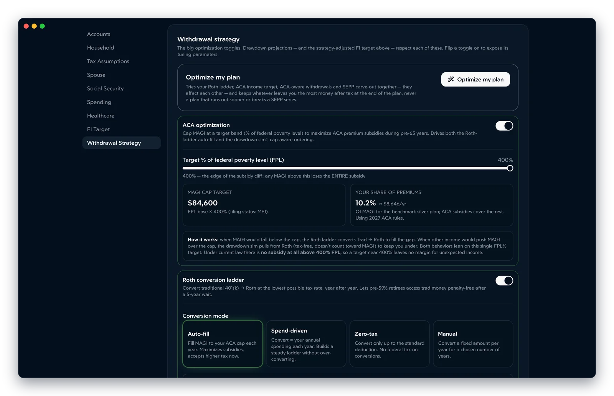

Guides
The Roth conversion ladder, explained
A Roth conversion ladder lets you spend Traditional 401(k) and IRA money years before 59½ without the 10% early-withdrawal penalty — and, done in low-income years, at a very low tax rate. Here's how it works, what it costs in 2026, and where people trip up.
Updated October 2026
How a Roth conversion ladder works
Money in a Traditional 401(k) or IRA normally can't come out before age 59½ without a 10% penalty on top of income tax. Money you convert to a Roth IRA follows different rules: each conversion can be withdrawn tax- and penalty-free once five years have passed, at any age.
So an early retiree converts a slice of Traditional money every year. Five years later, that year's conversion becomes spendable. Keep converting each year and you build a "ladder" where a new rung comes due every January:
| Year you convert | Penalty-free from |
|---|---|
| 2026 (age 50) | January 1, 2031 (age 55) |
| 2027 (age 51) | January 1, 2032 (age 56) |
| 2028 (age 52) | January 1, 2033 (age 57) |
| …and so on | until 59½, when the clock stops mattering |
The clock starts on January 1 of the conversion year, so a conversion in December 2026 is available on the same date as one in January 2026.
The rules that make it work
- Each conversion has its own 5-year clock for the 10% penalty. Before 59½, withdrawing a conversion that's less than five years old means the penalty applies to the taxable part of it.
- Roth IRA withdrawals come out in a fixed order: your regular contributions first (always tax- and penalty-free), then conversions oldest-first, then earnings last. You can't pick earnings first.
- Earnings are separate. Growth on converted money is only tax-free once you're 59½ and your first Roth IRA is at least five years old. A ladder spends the converted principal, not the growth.
- A conversion is taxable income in the year you make it — federal, and in most states. It also counts toward the MAGI that sets ACA subsidies and, from 63, Medicare IRMAA surcharges.
The IRS rules are in Publication 590-B (distributions from IRAs).
What a conversion costs in 2026
The ladder pays off when you convert at a lower rate than you'd pay later. In early retirement, with no paycheck, your taxable income can be very low. In 2026 a married couple filing jointly has a $32,200 standard deduction, a 10% bracket up to $24,800 of taxable income and a 12% bracket up to $100,800. Single filers have a $16,100 deduction, with 10% up to $12,400 and 12% up to $50,400.
Example. A married couple, both 56, convert $60,000 and also have $20,000 of qualified dividends and long-term gains. After the standard deduction, $27,800 of the conversion is taxable: $2,480 at 10% and $360 at 12%. Their dividends fall in the 0% capital-gains bracket. Federal tax: about $2,840 — 4.7% of the conversion.
State tax varies widely: the same couple pays $0 in Florida or Texas but $3,121 in New York, where the retirement exclusion starts at 59½. See how every state taxes Roth conversions.
Compare that with the 22%–24% many people paid on the same money while working, or the higher bracket Required Minimum Distributions can push you into later.
The five-year bridge
The catch is the first five years: your first conversion isn't spendable until year six. You need another source to live on in the meantime, such as:
- A taxable brokerage account. Selling investments only taxes the gain, often at 0% in early retirement.
- Roth IRA contributions (not earnings), which can come out any time.
- Cash savings.
- The Rule of 55 or a 72(t) SEPP, which can unlock Traditional money early. See Rule of 55 vs. 72(t).
Many people retire with roughly five years of spending in taxable and Roth-contribution money for exactly this reason.
How much to convert each year
There's no single right amount. The common approaches:
- Fill a bracket: convert up to the top of the 12% bracket (or 0% — just the standard deduction).
- Stay under the ACA cap: convert as much as you can while keeping MAGI below the subsidy cliff. Before 65 this often matters more than the tax bracket. See the ACA subsidy cliff.
- Match your spending: convert about what you'll need to spend five years from now.

The best choice depends on things that interact: your state, how big your Traditional balance is, when Social Security starts, and whether ACA subsidies are worth more to you than the tax saved. That's why it's worth modeling the whole plan rather than one year.
Common mistakes
- Forgetting the bridge and having to tap a conversion before it's five years old.
- Converting past the ACA cliff and losing thousands in premium credits to save a little tax.
- Withholding tax from the conversion itself before 59½. Withheld money counts as a withdrawal, not a conversion, so it can be penalized. Pay the tax from other money.
- Ignoring RMDs. Leaving a large Traditional balance untouched can mean big Required Minimum Distributions from age 73 or 75, at higher rates.
Common questions
How long do you have to wait to withdraw a Roth conversion?
Five years for each conversion, counted from January 1 of the year you convert. A conversion made any time in 2026 can be withdrawn penalty-free from January 1, 2031. After 59½ the wait no longer applies to converted money.
Do you pay tax on a Roth conversion?
Yes. The converted amount is ordinary income in the year you convert, for federal and usually state tax. The point of a ladder is to convert in years when your income — and so your tax rate — is low.
Can I convert straight from a 401(k)?
Many plans allow an in-plan Roth conversion, but most early retirees roll the 401(k) into a Traditional IRA after leaving the job and convert from the IRA. If you plan to use the Rule of 55, leave that money in the employer plan until you're done with it.
Does a Roth conversion affect ACA health insurance subsidies?
Yes. A conversion raises your MAGI, which sets your premium tax credit. In 2026 a household above 400% of the federal poverty level gets no credit at all, so conversions are usually sized to stay under that line.